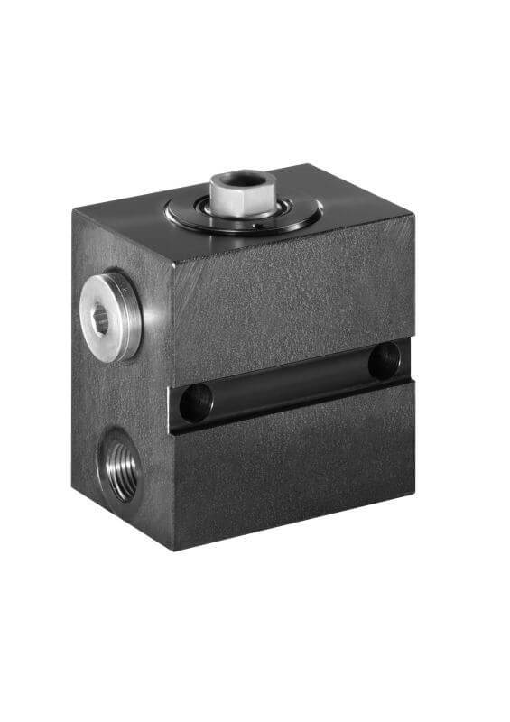
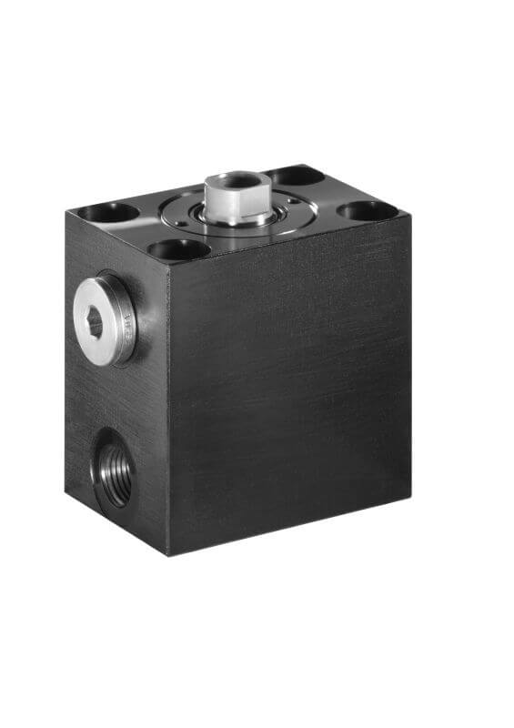
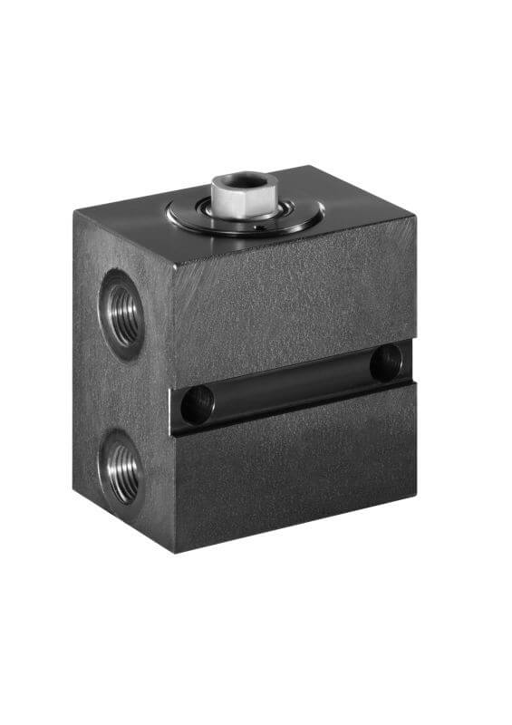
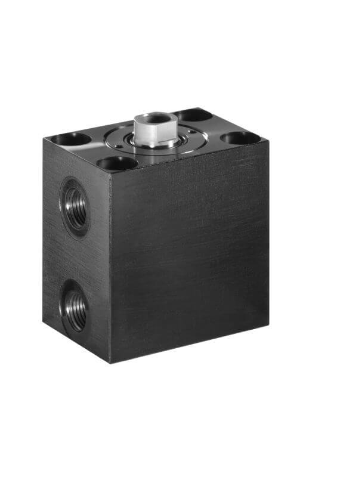
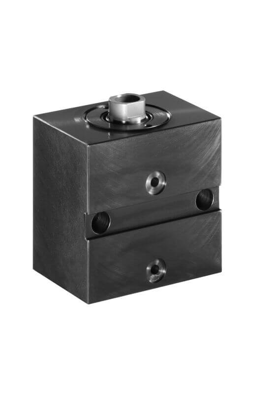
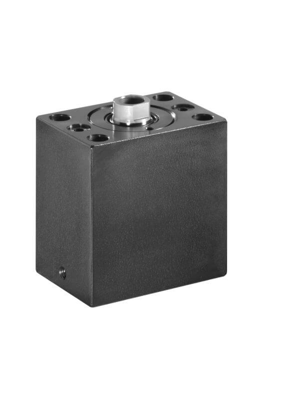
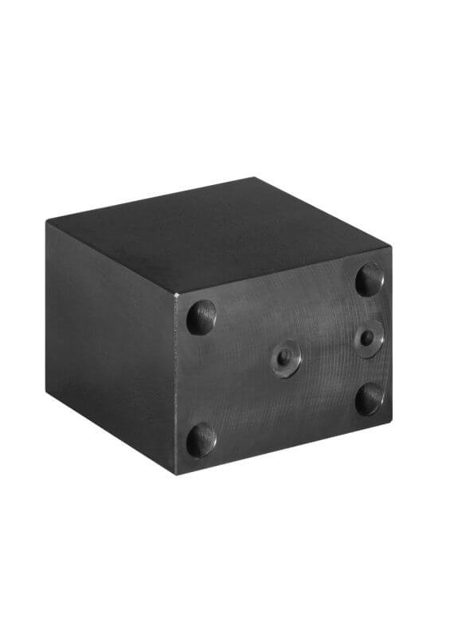
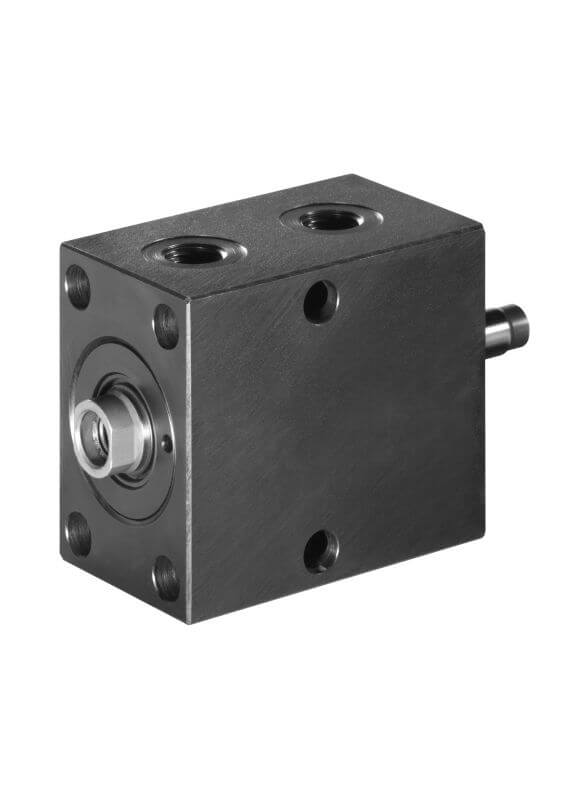

Mit Micromat Blockzylinder haben Sie die Kräfte im Griff!
Micromat Blockzylinder können aufgrund ihres großen Kraftbereiches bei kompakten Baumaßen und Dank kurzer und genauer Taktzeiten für viele Fertigungsaufgaben die ideale Lösung darstellen. Sie haben sich mit Funktionen wie:
im Automotivbereich, Maschinenbau und Formenbau ebenso bewährt wie beispielsweise im Bereich Spritzgießen.
Blockzylinder – Stahl: Einfachwirkend




Blockzylinder – Stahl: Doppeltwirkend






Technische Angaben
- Kraftbereich
- bis über 1000 kN
- Standardhübe
- 8-200mm
- Einbaulage
- beliebig
- Kolbengeschwindigkeit
- Vmax 0,5 m/s
- Betriebsdruck max.
- 500 bar
- Einsatztemperatur
- Standard: -10 bis +60°C
- Viton
- auf Anfrage
- Kolbenquerkraft
- sollte vermieden werden, in keinem Fall > 5% der Zylinderkraft
- Medium
- Mineralöl nach DIN 51524
Ausführung
- Gehäuse
- Material C45k brüniert, Kolbenbohrung rolliert bzw. gehont
- Kolben
- Einteilig Material Einsatzstahl gehärtet, Kolbenstangendichtung in Tandem-Ausführung
- Maßtoleranzen
- soweit nicht anders angegeben nach DIN 7168m